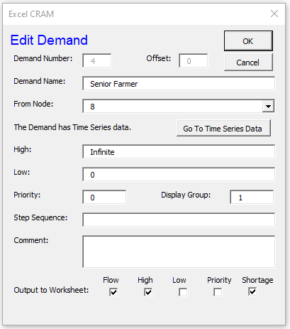
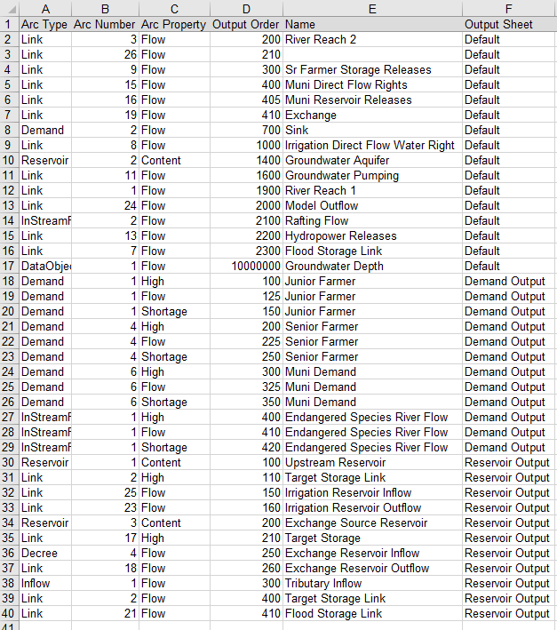
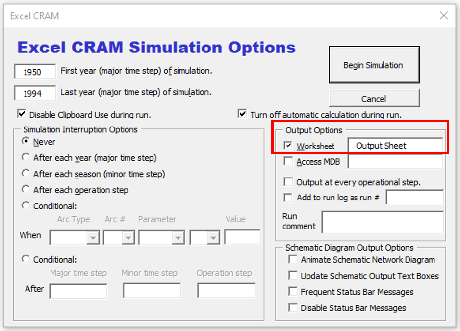

Model Output¶
Extracting Model Output¶
The Network Schematic allows users to interact with network elements and extract model output. By clicking on an object, users open the edit object dialog box. At the bottom of each dialog box there are multiple check boxes where users can select the output to export to a worksheet. In the Edit Demand figure below, output has been selected for Flow, High, and Shortage.
{kind=link}
For run-time efficiency, CRAM saves only those parameters that are defined as output before the model executes. It is not possible to retrieve additional data after a run that was not included on the output templates. Therefore, if additional output is needed simply select the object (link, reservoir, inflow, etc.) and check the desired output (flow, high, low, etc.).
Output Variables¶
There are 7 types of data that can be output from CRAM: Flow, High, Low, Priority, Contents, Evaporation, and Shortage. Some output is only available to certain network elements (links, reservoirs, etc.). The output variables are described in the table below. Information on the model parameters can be found in Creating a Network, arranged by network element.
Parameters |
Description |
|---|---|
Flow |
Denotes the amount of flow that the model found to be the optimal amount to pass through the network element considering all network element priorities and constraints. The value of the Flow variable is generated by CRAM. Flow is the typical output users will want to generate from their CRAM model. The Flow parameter applies to Links, Demands, Reservoir, Inflows, Instream Flows, and Decrees. For Data Objects this parameter is set by the User Code. |
High |
Denotes the maximum amount of flow allowed through the link in a single time step. The High parameter applies to Links, Demands, Instream Flows, and Decrees. If the High parameter is set to Infinite (default), the High output will often be similar to the Flow output. If the High parameter is set by the user (ex., 200), the High output will be limited by the High parameter. |
Low |
Denotes the minimum amount of flow that must pass through an element in a single time step. The Low parameter applies to Links, Demands, Instream Flows, and Decrees. The Low parameter default value of 0 is recommended; however, the value of this parameter can be adjusted by the user. |
Priority |
Denotes the relative benefit or priority of routing flow through this network element. Priorities in the model are additive so two elements in series will have their priorities added together and may create a combined priority greater than another element in parallel. The Priority parameter applies to all elements except Inflows. |
Contents (storage) |
Denotes the end of month storage contents of the Reservoir element. The Contents variable applies only to Reservoir elements. The initial contents are set by the user, but after the first time step the reservoir contents are calculated by CRAM. |
Evaporation |
Denotes the total evaporation from the reservoir during the current time step. The Evaporation variable applies only to Reservoir elements. The evaporation is calculated by CRAM according to the surface area/volume curve supplied by the user. |
Shortage |
Denotes the difference between the High (value desired) and the Flow (value attained) during the current time step. The shortage output is calculated by CRAM, and is typically used when analyzing output from Demand objects. |
Capacity |
Denotes the annual volumetric flow limit that is able to pass through a link. The volume of flow that has passed through a link is calculated by CRAM, and the link will close when the limit is reached so that no more flow passes through the object. The Capacity variable applies only to Decree objects. |
Worksheet Output Template¶
Anytime output is selected by the user (Flow, High, Shortage, etc.), a corresponding entry is automatically added to the sheet Worksheet Output Template. This sheet contains a list of all the network object that have been selected by the user to be output from CRAM. As shown below, the Worksheet Output Template lists the element type, element number (for that type), the type of output selected, the order number, the name of the element, and the output sheet where the location will be stored. Notice that some objects have multiple outputs. For instance, Demand 1 has output for High, Flow, and Shortage.
While the Worksheet Output Template stores a list of the data that will be exported from CRAM, the various output sheets actually display and store the data. Model output can be saved to any number of model output sheets as specified by the user. Output is stored in the sheet Output Sheet by default.
Output Location¶
The model output is stored according to the name specified in Column F of the Worksheet Output Template, which has the heading “Output Sheet” (see image above). When output is initially added, a new corresponding entry is added to the Worksheet Output Template and the value in Column F will have the value “Default”. Entries in Column F with the value “Default” will be automatically exported to a sheet specified in the Run Dialog Box (see figure below). The default name for this worksheet is Output Sheet.
{kind=link}
Users are encouraged to export different types of output to different locations (sheets). For instance, in the Worksheet Output Template image above, some demand related output will export to a sheet named “Demand Output”, and some reservoir related output will export to a sheet named “Reservoir Output”. The output location can be customized to meet the user’s needs. To change the output location, do the following:
Write a new sheet name in Column F for the variable of interest, such as ‘Shortages’ or ‘Watershed Output’.
Click “Read Output Template Sheets” from the ExcelCRAM menu to save the change, as shown in the image below.
{kind=link}
Note
Clicking “Read Output Template Sheets” ensures that changes to the Worksheet Output Template are not lost. For instance, if an object is selected from the Network Schematic before “reading the sheet”, the changes will not be saved.
Defining the Order of the Output¶
By default, CRAM places all output on the Output Sheet in numeric order, grouped by element type (Link, Inflow, Demand, etc.) as it is listed in the Worksheet Output Template . Adding new network elements later causes the output order to change because the new output is inserted in at its numerical place.
Users can manually adjust the order of model output by specifying a numbered order in Column D named “Output Order” of the Worksheet Output Template. To change the order of the output, do the following:
The default value for Column D is 10,000,000. When the output from the Worksheet Output Template is displayed in the output sheets (e.g., Output Sheet), the output is put in numerical order, with lower values appearing in columns to the left and higher values in columns to the right. The order is purely relational, so there is no effect of gaps in number sequence. Sometimes it is valuable to intentionally leave gaps so additional parameters can be inserted into the order of the list at a later time. For instance, output related to an upper watershed may be numbered in the 5000’s, while output from a lower watershed may be numbered in the 8000’s.
When adding the output order is completed, from the Add-ins section of the Excel Ribbon select “ExcelCRAM / Output / Read Output Template Sheets”. This will rearrange the output parameters in increasing order. Next, select “ExcelCRAM / Output / Read Output Template Sheets” from the Add-ins menu. This will save the changes to the Worksheet Output Template. Failing to read and then write the output sheet will result in the changes being lost the next time the Worksheet Output Template is read (e.g., when a parameter is selected on the Network Schematic sheet).
Run the model to get the output displayed on the output sheets in the order specified.
An example of the interaction between the numbering on the Worksheet Output Template and the order on the default Output Sheet is shown below. Link 3 is ordered first with a value of 200, followed by Link 16 with a value of 210, followed by Link 9 with a value of 300.